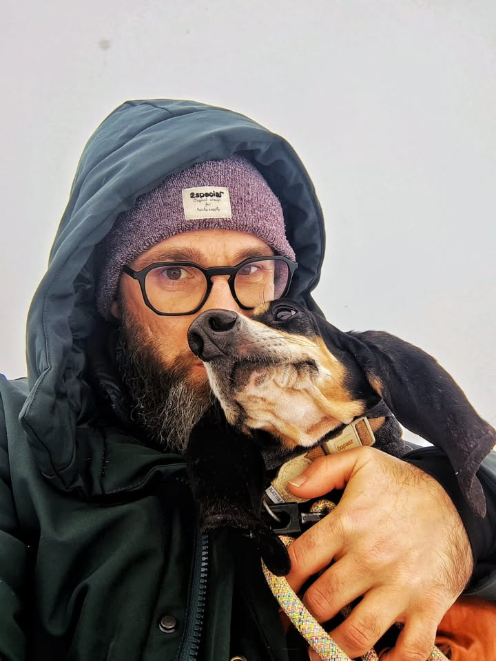

Mi chiamo Andrea Bellettati e sono un esperto in comportamento e nutrizione per cani e gatti. Studio da anni la relazione che intercorre tra questi due mondi: non si può parlare di benessere animale senza tenerli insieme.
Prenota la consulenza gratuita
Un cane irrequieto, un gatto che si gratta, una digestione difficile: spesso la risposta è nella ciotola tanto quanto nelle abitudini. Li guardo insieme, mai separati.
Niente slogan, niente “grain free” perché fa tendenza. Parto dalla letteratura, leggo le etichette riga per riga e spiego il perché di ogni scelta.
La dieta perfetta sulla carta non serve a niente se la famiglia non riesce a seguirla. Costruisco qualcosa di sostenibile, per l'animale e per chi se ne prende cura.

Convivo con un bassotto: ogni cosa che studio passa prima dalla nostra quotidianità. Le passeggiate, i pasti, le piccole intolleranze, gli inverni in montagna. È lì che la nutrizione smette di essere una tabella e diventa cura concreta.
Questo è anche il modo in cui lavoro con te: con la pazienza e l'onestà di chi sa che dall'altra parte c'è un compagno di vita, non un “caso”.
«Alimentare correttamente il proprio amico a quattro zampe è, insieme alla sua educazione, la più grande forma di amore.»
Se l'alimentazione è sbagliata la medicina è inutile; se l'alimentazione è corretta la medicina non è necessaria.Proverbio ayurvedico · il cuore del mio lavoro
La curiosità per ciò che metto nella ciotola del mio cane diventa studio serio: etichette, ingredienti, letteratura scientifica. Capisco quanto poco se ne parli davvero.
Mi unisco a un gruppo di professionisti nato per portare consapevolezza su un argomento troppo spesso sottovalutato. Formazione continua, confronto e metodo condiviso.
Consulenze 1:1 per famiglie, collaborazione con Reico, webinar e contenuti come “Etichette a 4 Zampe” e l'antistaminico naturale. Sempre con lo stesso obiettivo: scelte consapevoli.
Una consulenza gratuita di 45 minuti per analizzare alimentazione e comportamento del tuo animale, e un piano di lavoro firmato su misura.
Il primo passo è gratuito e senza impegno.